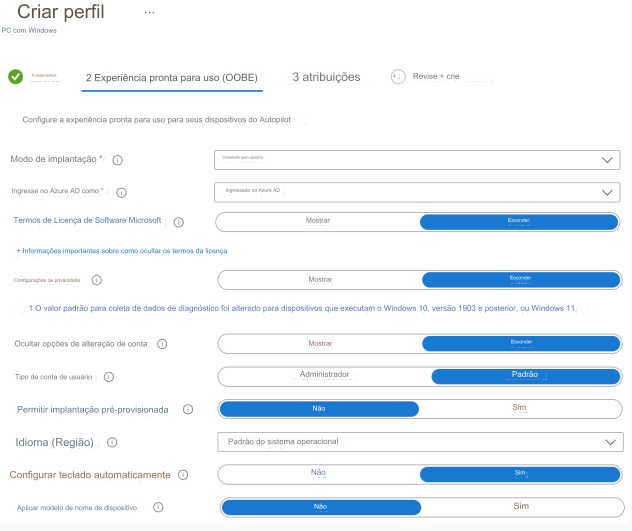
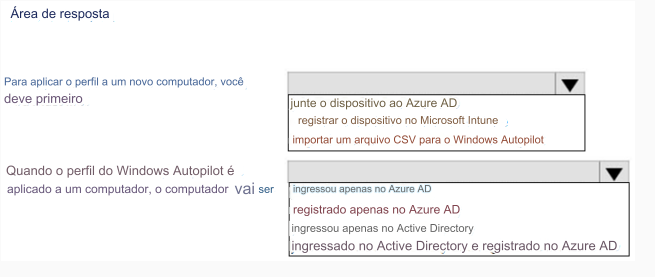

168- PONTO DE ACESSO
Você tem um locatário híbrido do Azure AD.
Você configura um perfil de implantação do Windows Autopilot conforme mostrado na exposição a seguir.

Use os menus suspensos para selecionar a opção de resposta que completa cada afirmação com base
nas informações apresentadas no gráfico.
NOTA: Cada seleção correta vale um ponto.
